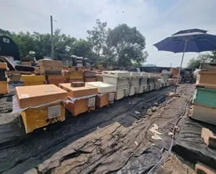
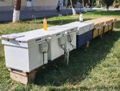
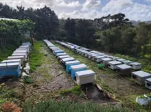

양봉 농업마이스터 처음 나왔다
제7회 농업마이스터에 양봉 분야 첫 지정 — 창원·대전·옥천 양봉가
검토용 미리보기입니다. 아직 공개되지 않은 기사를 포함하고 있으며, 검토 의견은 발행인에게 알려 주세요.
양봉 신기술과 사람 이야기
제7회 농업마이스터에 양봉 분야 첫 지정 — 창원·대전·옥천 양봉가
2027년 수당 대상에 양봉농가 추가 추진 — 연 60만 원, 2029년부터 80만 원 계획이지만 아직 ‘추진 계획’ 단계
1998년부터 쓴 국가 관리계획 개정 — 벌통 주인 바뀔 때 신고 손보고, 거듭 어기면 더 강하게 제재
국내 사업단 9월 13~21일 3차 설치 — 벌통 안 온도·습도·이산화탄소·소리 자료가 9월 중순부터 들어와, 연말까지 100통으로 늘릴 계획
농촌진흥청, 한글날 맞아 표준 양봉 용어집 개정판 — 벌통(소상)·벌무리(봉군)·벌집판(소비) 등 새 말 먼저
농진청, 딸기꽃 피는 10월 앞두고 화분매개 벌 준비 당부 — 다 쓴 벌은 다시 쓰지 말고 태워 없애야
국공유림 30ha·사유림 10ha 이상 밀원숲 10년 지정…사유림은 산주·양봉농가가 수익 배분 계약 맺어야
민관합동 작황조사 동행 기사…한 농가 봉군이 겨울 나며 180군에서 44군으로, 벌값은 5년 새 두 배
실증서 살충률 99%, 2시간 이상 걸리던 작업이 20분으로…10m 이상 나무 위 등검은말벌 집에도 쓴다



꿀벌의 밥상이 차려지는 때 (자료: 국립수목원, 비온팜 밀원정보 재인용)
| 나무 | 4월 | 5월 | 6월 | 7월 |
|---|---|---|---|---|
| 벚나무4월 중순~5월 초연분홍 꽃 | ||||
| 아까시나무5~6월유백색 꽃 | ||||
| 피나무5월 말~7월 말담황색 꽃 | ||||
| 밤나무6월흰색 꽃 | ||||
| 황칠나무6월흰색 꽃 | ||||
| 삼색싸리6~7월홍자색 꽃 | ||||
| 헛개나무7월 말녹색 꽃 |
메일로 새 기사를 받아 보시는 구독은 준비하고 있습니다.